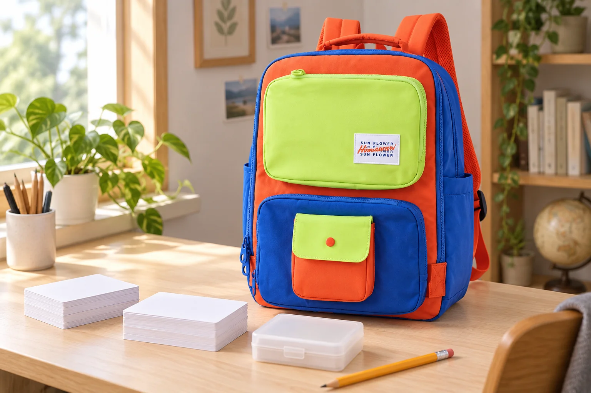
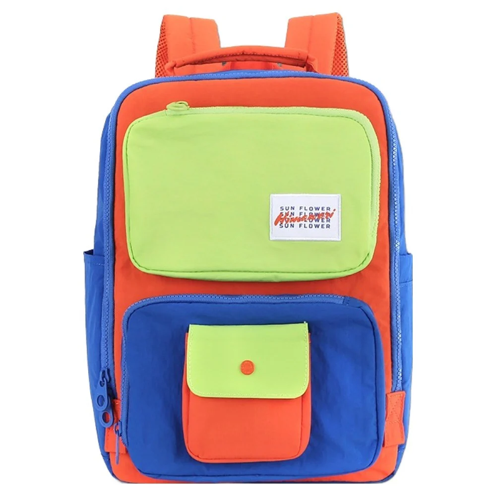

대기석에서 여는 백팩, 단어 카드를 한 케이스로 꺼내기

단어 카드 몇 장을 보려고 백팩을 열었는데 노트와 충전 파우치를 먼저 꺼내야 한다면 짧은 대기 시간이 정리 시간으로 바뀔 수 있습니다. 카드가 작다고 가장 남는 틈에 넣어 두는 배치가 늘 편한 것은 아닙니다. 작은 케이스 하나를 집어 올리고 다시 닫는 데 필요한 손의 공간을 생각해봅니다. 잠깐 쓸 카드 묶음 하나가 가방에서 나와 대기석의 작은 공간에 놓이는 동작을 골라봅니다.
준비할 카드의 양을 정했다면 실제로 쓰는 케이스에 넣고 닫아봅니다. 낱장의 너비와 케이스 전체 크기는 다를 수 있습니다. 고정 고리나 여밈이 밖으로 나오는 구성이라면 그 부분도 포함해 가방 자리를 봅니다. 카드를 가장 많이 넣을 수 있는 보관함보다 이번 외출에서 꺼낼 한 묶음을 다룰 수 있는지가 먼저입니다. 카드가 늘어나 케이스가 벌어지면 내용과 보관품의 구성을 다시 고를 수 있습니다.
무릎에 가방을 올릴 수 있는 자리
가방을 무릎 위에 두어도 되는 대기석에서는 어느 방향으로 입구를 열지 살펴봅니다. 파일이나 노트를 향한 큰 입구를 열지 않고 케이스가 있는 위치에 접근할 수 있는지 봅니다. 가방을 세운 상태와 눕힌 상태에서 케이스가 놓이는 면도 다를 수 있습니다. 집에서 앉은 자세로 같은 물건을 꺼내보면 서서 준비할 때 보이지 않던 동작이 드러납니다.
케이스를 잡으려는 손 옆에 물병이나 두꺼운 파우치가 있으면 작은 보관함을 고르기 어려울 수 있습니다. 케이스가 들어갈 만큼의 빈자리와 손가락으로 잡아 올릴 여유를 나누어 생각합니다. 작고 깊은 포켓에 딱 맞게 넣었을 때 오히려 꺼내기 어렵다면 더 넓은 곳에 별도 묶음으로 두는 선택도 있습니다. 포켓과 물건의 크기를 가능한 한 같게 만드는 것이 목적은 아닙니다.
케이스를 꺼낸 뒤에는 백팩의 여밈을 정리할 수 있습니다. 열린 가방 안에서 낱장을 골라 바로 보는 방식과 케이스 전체를 밖으로 가져오는 방식 가운데 어떤 흐름이 맞는지 비교해봅니다. 가방 밖으로 카드 여러 장을 흩어놓아야 한다면 회수할 범위도 늘어납니다. 케이스 하나를 펼칠 수 있는 면을 먼저 고르면 가방이 임시 카드 보관대가 되는 상황을 줄일 수 있습니다.
가방을 내려놓아야 하는 자리
무릎에 가방을 올리기 어려우면 안내된 보관 위치와 주변 통로를 봅니다. 가방을 열기 위해 옆 좌석을 모두 차지해야 하는지, 바닥에 둔 가방을 매번 끌어올려야 하는지에 따라 배치를 달리할 수 있습니다. 필요한 케이스만 먼저 꺼내고 백팩은 안정된 자리에 두는 방법도 있습니다. 어느 위치가 편한지는 실제로 머무를 공간의 크기와 함께 결정됩니다.
Himawari No.8029 블루라임을 이런 외출의 백팩으로 쓴다면 카드 케이스와 평소 소지품을 넣은 상태로 앉아봅니다. 카탈로그 외부 크기 27 × 39 × 14cm는 무릎이나 보관 자리에서 차지할 바깥 규모를 생각할 자료입니다. 사용할 포켓의 입구와 깊이는 실제 케이스로 확인합니다. 가방을 어느 쪽으로 돌려 열고 어떤 면을 잡을지 현재의 물건으로 정해볼 수 있습니다.

한 번 꺼낸 케이스가 돌아갈 위치는 비워둡니다. 대기 중 받은 번호표나 작은 안내서를 그 자리에 넣었다면 케이스를 되담기 전에 새 물건의 위치를 정해야 합니다. 번호표는 다시 꺼낼 시점이 있을 수 있으므로 카드 케이스와 섞지 않고 알아볼 곳에 둡니다. 작은 물건 여러 개가 같은 포켓에 모일 때에도 무엇을 먼저 사용할지에 따라 자리를 나눌 수 있습니다.
카드를 잠깐 꺼내 봤다가 다른 일을 해야 한다면 낱장을 정리한 뒤 케이스를 닫습니다. 백팩에 손을 뻗기 전에 한 묶음으로 돌아와 있어야 급히 여밈을 마칠 때 흩어질 물건이 줄어듭니다. 기기나 휴대전화까지 같은 손에 들고 있다면 내려놓을 면을 정하고 순서를 나눕니다. 케이스의 역할이 분명하면 대기 시간이 끝나는 순간에도 가방을 다시 분류할 필요가 적어집니다.
이름이 불렸을 때 무엇을 먼저 담을까
갑자기 이동할 차례가 되는 장면을 생각해봅니다. 카드 케이스를 닫아 정한 위치에 넣고, 손에 든 확인 자료나 연락 도구를 챙긴 뒤 백팩을 멥니다. 이 순서에서 케이스를 넣으려고 다른 짐을 꺼내야 한다면 배치를 바꿀 이유가 있습니다. 카드 한 묶음을 잠깐 사용한 뒤 큰 정리 없이 이동할 수 있는지 확인해보면 됩니다.
케이스가 노트 아래에 눌려 잘 잡히지 않았다면 그날의 불편은 카드 수와 관계가 없을 수 있습니다. 반대로 꺼내기는 쉬웠지만 케이스 밖에 카드가 많이 남았다면 펼치는 범위를 줄일 수 있습니다. 가방 안의 접근 문제와 밖에서 사용하는 묶음의 크기를 나누어 봅니다. 두 가지를 한꺼번에 바꾸지 않아도 어느 동작이 달라졌는지 비교할 수 있습니다.
가방을 교체할 때에는 카드 케이스를 기존 파우치에 넣어 통째로 옮길 수 있습니다. 새 백팩에서 같은 포켓 높이를 찾기보다 앉았을 때 어느 입구를 열지 다시 정합니다. 손에 잡히는 모서리와 여밈을 닫는 동작을 한 번 해봅니다. 평소 짐이 줄어든 날에도 케이스가 큰 칸의 바닥으로 내려가면 찾을 위치가 달라질 수 있으므로 현재 배치를 기준으로 봅니다.
다음 외출 전에는 실제로 카드 케이스를 꺼냈던 장소를 떠올려봅니다. 머무를 자리가 없어 사용하지 못했다면 가져갈 구성부터 달라질 수 있습니다. 앉아서 꺼내기만 어려웠다면 위치를 바꾸어볼 수 있습니다. 케이스를 일상 가방에 늘 남겨둘지 필요한 일정에만 추가할지도 정합니다. 백팩을 열어 작은 묶음을 잡고 닫은 뒤, 다시 같은 자리로 돌려놓는 동작이 짧은 대기 시간에 맞게 이어지면 됩니다.